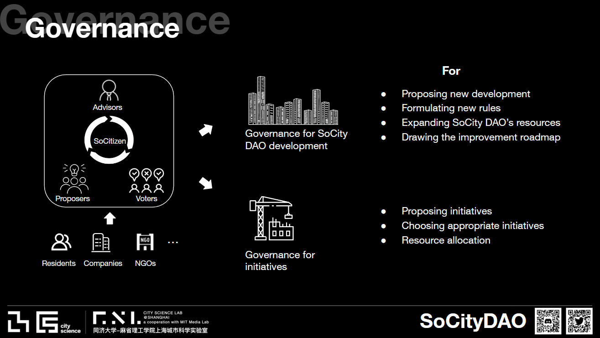
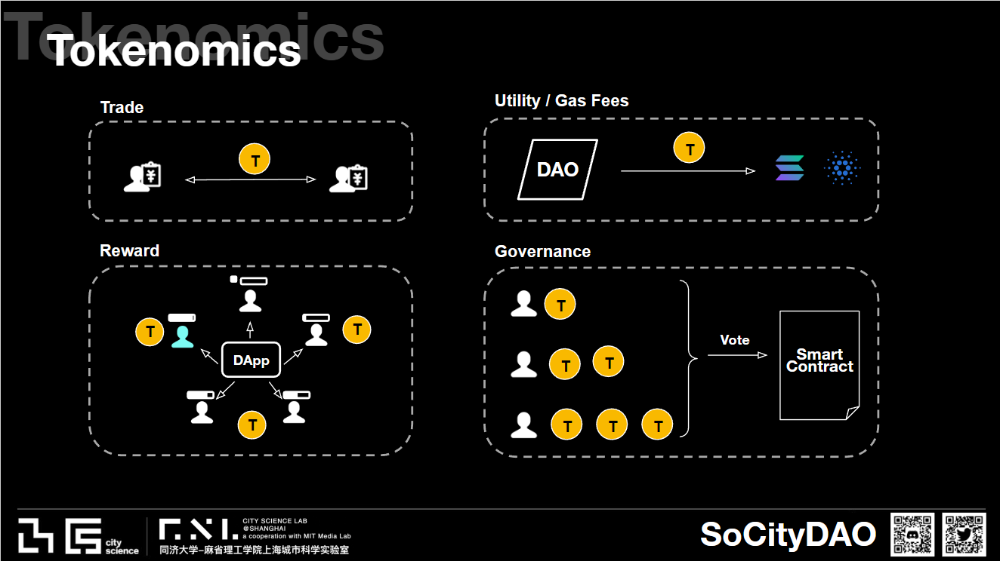

SoCity DAO--Promoting Pro-social, Pro-sustainable Behaviors in Cities with Blockchain-based Decentralized Incentive Policies

Introduction
SoCity DAO is a non-profit organization to promote prosocial behaviors with decentralized incentive policies. It is conducted by the City Science group (MIT Media Lab) and City Science Lab Shanghai (Tongji University). It will be the first decentralized pro-social platform, that helps urban citizens all around the world make their communities more livable, and their cities higher-performance, and earn rewards by living more prosocially. It bridges citizens, governments, and developers to minimize the urban supply-demand gap, empowered by big data and AI.
Governance & Tokenomics
(1) On-chain & Off-chain Governance
To ensure that the community’s interests are represented and that the DAO’s initiatives are aligned with its mission, SoCity DAO employs both on-chain and off-chain governance mechanisms.
On-chain governance allows SoCity DAO members to propose and vote for DAO development and potential initiative investment based on smart contract and governance token. This ensures that the decisions made by the community are transparent and democratic. Members can actively participate in the governance process and influence the direction of the organization, which is a core tenet of decentralization.
Off-chain governance, on the other hand, refers to the online community and forums that SoCity DAO operates. This allows users to engage in discussions and share their thoughts and ideas on various topics related to the organization. By leveraging off-chain governance, SoCity DAO fosters a sense of community and encourages active participation and collaboration.
By combining both on-chain and off-chain governance mechanisms, the result is a more inclusive and transparent decision-making process that aligns with the values and goals of SoCity DAO.
(2) Tokenomics
SoCity DAO has implemented several unique features, including a duo-token system, membership, and an on-chain reputation score.
The duo-token system features two types of tokens: governance and utility tokens. The governance token allows users to participate in the DAO’s governance process, giving them a say in the decision-making process. The utility token is awarded to users for their contributions to the platform. This incentivizes participation and rewards users for their efforts.
SoCity DAO also offers different membership levels, which are represented by non-fungible tokens (NFTs). These memberships provide users with access to different benefits, such as exclusive content and events. By using NFTs to represent membership, SoCity DAO ensures that ownership and access to benefits are transparent and secure.
Finally, the on-chain reputation score records users’ contributions and engagement in SoCity DAO and its various initiatives. This score serves as a measure of a user’s activity and participation within the community. By tracking and rewarding users for their contributions, SoCity DAO encourages participation and fosters a sense of community.
Together, these features create a unique and inclusive platform that empowers its community and promotes sustainable urban development.
Acknowledge
Core Team: Ryan Yan Zhang, Kejiang Qian, Chance Jiajie Li, Charlotte Jiwen Ge, and Chengliang Li
Related Links
View our website: socitydao.org
View our whitepaper: SoCity Whitepapaer